* hi! the name's kommit! kommit the-
yknow this is a bad bit actually
* welcome to my corner in the internet :)
* welcome to my corner in the internet :)
* i made this site cause i wanted my own personal space without limitations (like carrd, strawpage)
and lowkey to also use my html knowledge i learned in class xd
- See that CURSOR, User? That's your SOUL, the culmination of your being!
- Within, it holds your WILL... your COMPASSION...
...and the FATE of the world. - Guide your CURSOR towards any of those buttons above!
- Each one shows something different, so experiment as you please!

ABOUT ME
- hi there! as stated earlier, my name is kommit! it's pronounced as 'commit' in case you were wondering
a few of my friends call me comet, so if you like that, go ahead! - im a very introverted + shy AND forgetful guy that struggles heavily with talking to people </3
i am procrastination incarnate - i like creating things - more specifically art, music, and coding (html + beginner python)
drawing is still my fav out of my big three though - ive dabbled in 2d animation and 3d animation+renders as well (with mineimator/blockbench),
and would love to pick up blender and godot soon :)
making a 3d model out of my character(s) is a goal of mine! - what else do i even write here... im not very interesting
- my favourite colour is blue + a lot of the colder colours
- cats are also really cute
touhou PROJECTS
- check out all the stuff ive worked on!
most of these will be friday night funkin related as i had a huge brainrot over it a couple years ago lmfao - this is a small scratch project i worked on back in 2024 featuring me and my friends' characters as incredibox polos!
- i used a template, but i made the sounds and the art myself!
excuse the jank, it was my first time doing something on scratch + ive never played incredibox when i made this lol - also known as UB:SR, this is a page full of samples originally meant for my friend Hyphen who uses beepbox/ultrabox a lot!
- after posting it on reddit, turns out this page had more use than i thought so i update it when i can
- currently has 19 pages of sounds! thats probably 150+ audios i think!!
- theres a lot. there would be double if i was less shy and posted more of my shit online.
- the pause script also blew up and is used in a buncha mods that you may know :o
- i am the artist of Static in this huge fnf subreddit art collab!
- i also appeared twice in a channel called Object Show Music that's basically SiivaGunner but for OSC songs
- i made Spow (Unreleased) that's Whistle (cause it was trending at that time) and then hfjONE's Title intro as undertale :]
- song collabs with my good friend Hyphen :)
- song collab with moon <3
- here's FunkinOSC Official, the official channel of a mod i was director on! it's run by a friend of mine, starry :D
incredibox: kommix

kommit's ultrabox sample repository

friday night funkin mods
collaborations
>
things i like
- i like a lotta stuff and these are games that i still like to this day!
i wont list EVERYTHING cause thats seriously too much :')
- undertale/deltarune
- ultrakill
- balatro
- friday night funkin
- hollow knight + silksong
- minecraft
- persona 3 and 5
- portal 1 and 2
- rhythm games (adofai, rhythm doctor, jsab, etc...)
- webfishing
- exit 8 and platform 8
- ...and more!
- other stuff i like that's not just games lmao
- hfjone
- severance
- black mirror
- windows 7 and winxp
- liminal spaces
- listening to music !!!
- cats (including furry cats)
- protogens and robots in general
- movies
- old internet and old tech
- toki pona (cant speak but its interesting)
- learning about how things work fascinates me a lot
my music taste
- my music taste is honestly all over the place, but in general,
whatever i like, i listen to it! genre or who made it doesnt matter much for me - speaking of playlists, i have three "main" playlists;
- i have an "everything" playlist where every song i like goes in,
- a more refined playlist with songs that are more my taste,
- then finally my top favourites that i really really love :]
- from what ive gathered however, i like instrumental stuff more than songs with vocals!
i basically grew up listening to game soundtracks so that makes sense lmao - instead of yapping and trying to make myself make sense, heres my everyday playlist
silly stuff


 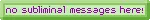
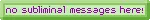

 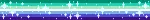
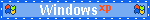
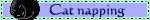
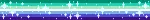
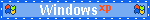
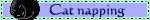

 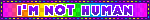
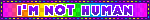


 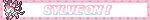
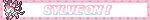


 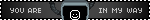
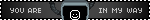


 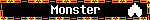
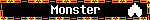

 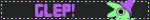
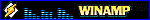
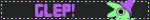
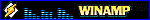


 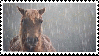
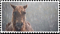


 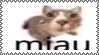
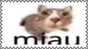


 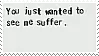
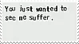
 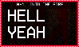
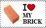
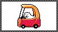
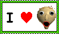
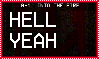
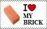
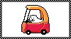
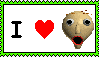
 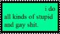
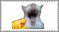
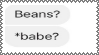
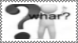
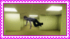
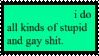
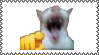
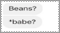
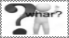
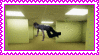


 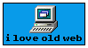
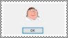
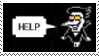
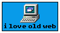
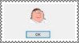
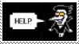